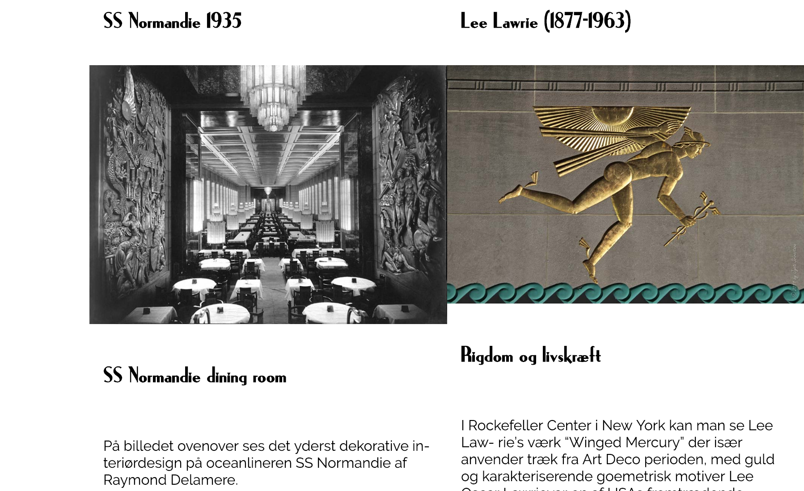
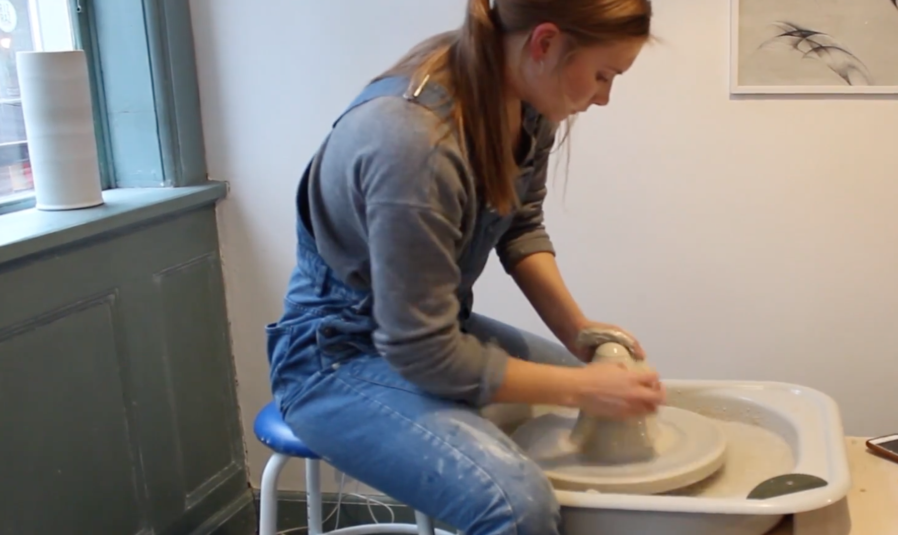
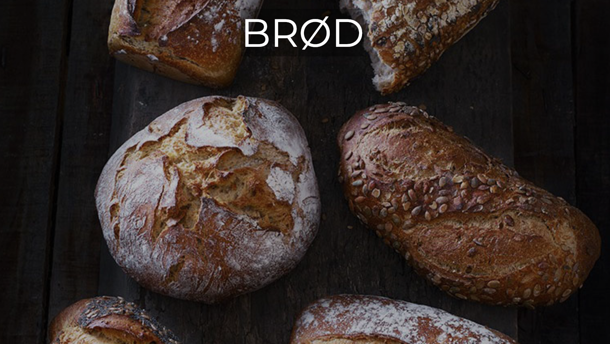
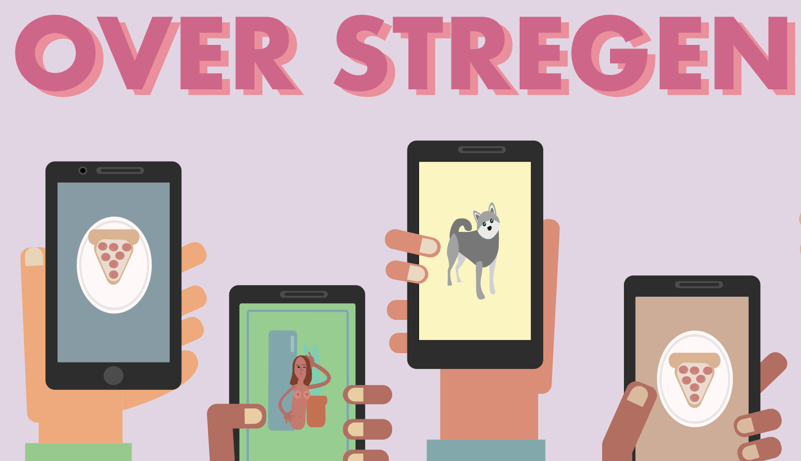
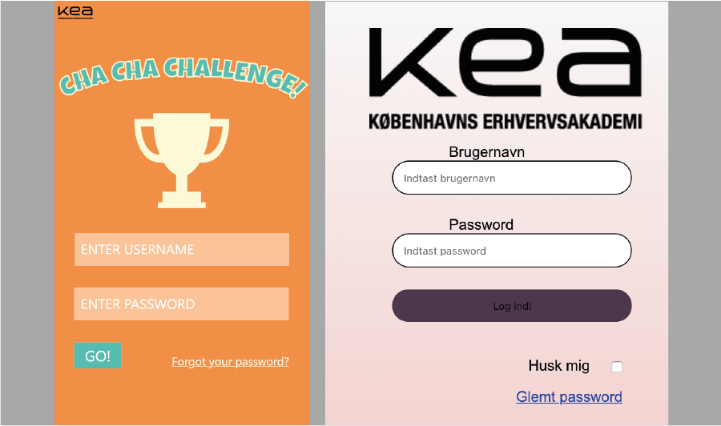

TEMA 01
GRUNDLÆGGENDE WEBDESIGN
RESPONSIVE STILARTSITE
I Tema 01 arbejdede vi med stilart-sitet. Vi fik uddelt en tilfældig stilart, og fik så til opgave at lave et responsivt website der skulle præsentere stilarten. Vi blev undervist i grundlæggende HTML, CSS, Photoshop og inDesign. Jeg valgte primært at fokusere på stilartets font og billedemateriale til at vise stilartens "look".

TEMA 02
GRUNDLÆGGENDE INDHOLD
PILOTPROJEKT
I tema 02 arbejde vi med videointerviews. Vi fik til opgave at finde en person/virksomhed med en passion for noget, og skulle så lave et videointerview med personen/virksomheden. Vi blev undervist i interviewteori, fototeori- og teknikker og Adobe Premiere. Jeg prøvede så vidt muligt at lave et interview med gode B-rolls og en rød tråd igennem hele klippet.

TEMA 02
GRUNDLÆGGENDE INDHOLD
REDESIGN LAGKAGEHUSET
Efter pilotprojektet fik vi til opgave at redesigne en eksisterende hjemmeside. Min gruppe og jeg valgte virksomheden Lagkagehuset. Det var måske en lidt stor bid, da deres nuværende hjemmeside er ganske pæn. På baggrund af brugerresearch, fandt vi ud af, at der faktisk var nogle ting som kunne forbedres - men det blev aldrig en radikal 180-drejning rent designmæssigt, hvilket heller ikke var planen. Vi prøvede at forenkle siden og skabe en mere visuel oplevelse.

TEMA 03
GRUNDLÆGGENDE ANIMATION
SEX OG SAMFUND
I tema 03 fik vi æren af at lave et lille webspil til organisationen Sex og Samfund. Her var omdrejningspunktet billede-deling uden samtykke. Vores spil oplyste om hvornår det er ok eller forkert at dele intime billeder. Vi hendvendte os til unge mennesker i alderen 12-15 år. Projektet blev udført i HTML, CSS, JavaScript og Illustrator..

TEMA 04
GRUNDLÆGGENDE UX
REDESIGN FRONTER + NATIVE APP
I tema 04 fik vi til opgave at redesigne Fronters mobilhjemmeside. Her var alfa/omega at lave research og basere data/viden på en designløsning. Målet var at overskueliggøre fronter, og gøre det så brugervenligt som muligt.
Senere har vi lavet en prototype til en app, hvor visionen var at skabe fællesskab og underholdning til eleverne på KEA - især om fredagen! I tema 04 har vi primært arbejdet med HTML, CSS, JavaScript, Illustrator og XD.
